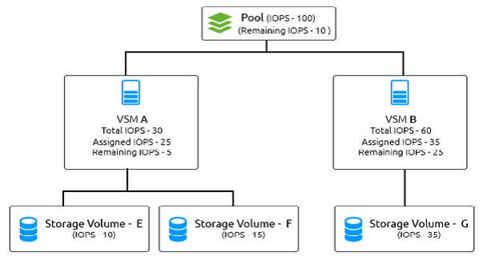

Assuring Quality of Service
Introduction
Assuring quality of service makes your storage performance predictable. CloudByte ElastiStor is unique in its QoS offering as it lets you
- Easily commission storage with guaranteed IOPS at various levels. You can decide to configure QoS at a Pool level, VSM level, or Storage Volume level.
- Configure multidimensional QoS involving IOPS, throughput, latency, and capacity.
- Utilize untapped system resources. For example, assume that you have three VSMs but only one is active. In this case, the active VSM can use the entire system’s capability.
- On-demand modification of settings without system restarts.
Choosing your QoS
The following points help you choose an appropriate QoS:
Endpoint: Decide at what level you want to implement QoS.
Select a capable pool: Based on VSM’s requirements, you provision it on a capable Pool that can meet the requirements. Define the pool level QoS, based on Pool configuration and the controller level. QoS is determined based on the Pool capacity, which is the underlying storage capability.
QoS provisioning: Understand your VSM’s QoS requirements across the data access and data protection needs. Based on the requirement of the VSM, you can either choose QoS automatically or manually. Ensure that you are aware of the Pool settings and how effectively you want to use it at the VSM level.
Sub-divide QoS: Within a VSM, based on varying needs, further sub-divide QoS across Storage Volume, based on the guarantee that the administrator wants to set. For example, when a VSM is used to store logs in the database, since logs need higher IOPS and lower throughput and latency, set it accordingly. Whereas a database requires low IOPS, high throughput, and high latency.
Configuration
Use ElastiCenter to configure QoS settings. The configuration can be at the following levels:
- Pool: For details, see Creating a Storage pool.
- Account: For details, see Creating an Account.
- VSM: For details, see Provisioning VSM.
Configuring Grace
What is Grace
Grace is the provisioning of unused IOPS/throughput of Pools to Storage Volumes based on the performance requirements. You can configure Grace at Pool level and Storage Volume level.
For example, assume that you have a Pool with the capacity of 100 IOPS and Grace enabled. Two VSMs named VSM A and VSM B, with a capacity of 30 IOPS and 60 IOPS respectively are created under the Pool.

- Under VSM A (with 30 IOPS capacity), Storage Volumes named E and F are created, and assigned 10 IOPS and 15 IOPS respectively.
- Under VSM B (with 60 IOPS capacity), Storage Volume G is created and assigned 35 IOPS.
- The grace available in this scenario is 40 IOPS.
Configuring Grace at the Pool level
Grace is enabled by default at the Pool level. You can edit Grace after creating the Pool.
To edit,
- Go to the Pool page and then in the actions icon, click Settings.
- Click Edit and then choose to enable/disable Grace.
Configuring Grace at the Storage Volume level
To enable Grace at the Storage Volume level, ensure that Grace is enabled at the respective Pool level.
To edit,
- Go to the Storage Volume page and then in the actions icon, click Settings.
- Click Edit and then choose to enable/disable Grace.
- Click Save.
Monitoring QoS
In the Storage Volume page, select the Volume for which you want to monitor QoS. The page that appears displays the monitoring data.
QoS tips
Storage capacity
Discs, storage connectivity, and type
Capability: Ensure that you are well aware of the capabilities of your storage subsystem. For example, the right interconnection between the controller and storage, the type of disks on the disk array, and the ability to expand the capacity.
Limitations: Ensure that you have assessed the limitations. For example, increasing storage capacity does not make any sense if the network does not support.
Controller characteristics
RAM, CPU, and Network:
CPU: If the storage is more I/O bound than CPU bound, it is more effective. CPU load should not be more than 60-70 percent, or you add more cores.
RAM: RAM determines the ability to cache. Larger RAM means more filesystem caches. In a READ-centric scenario, larger RAM helps generate better QOS. That is, more I/O and throughput but lesser latency.
Network: Network capacity decides data access and data protection. Assure adequate network bandwidth to export performance to clients. Network should do justice to the storage system.
Segregation: Segregate data access and data protection so that protection workloads do not interfere with data access workloads.
Pool creation
Storage group tips
As a best practice, create storage with 8 to 10 disks. When you add storage groups, keep them identical. For example, do not add disparate groups to the same Pool. For example, if one group has SATA disks and another group has SAS disks, then do not assign both to the same Pool. That is, do not create hybrid Pools.
Multiple Pools within a Controller
Tips to avoid contention points: Be judicious when you add multiple Pools to a controller. For example, it does not make sense if network bandwidth is already utilized to the maximum with the existing Pools, or CPUs are already busy serving the existing Pools. QoS also suffers because of over provisioning.
When to combine multiple pools: When no conflict pertaining to bandwidth, CPU, or Memory exist, you can combine Pools.
Optimizing QoS
Disk characteristics: Better the disk characteristics, better the QOS. For example, the IOPS, throughput, and latency of SATA disks are not as good as that of SS disks.
Disk layout: Better the disk layout, better the QoS. For example, keep the disk layout to 8 to 10 disks.
Improving WRITE performance: If the application requires synchronous WRITES, associate high performing disk to the Pool to speed up the WRITEs. This guarantees better QOS.
Improving READ performance: To improve the READ performance or increase the filesystem cache hit rate, add high performing disks as cache devices to the Pool.